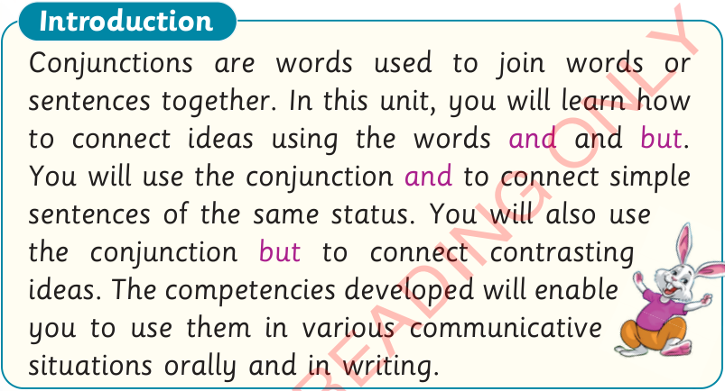

Unit Six
Connecting ideas using ‘and’ and ‘but’
Introduction
Conjunctions are words used to join words or sentences together. In this unit, you will learn how to connect ideas using the words and and but. You will use the conjunction and to connect simple sentences of the same status. You will also use the conjunction but to connect contrasting ideas. The competencies developed will enable you to use them in various communicative situations orally and in writing.

Activity 1: Listening and oral practice
(a) Use and to join sentences together. The first one has been done for you.
I like English.
I like Kiswahili.
I like English.

John
Sarah
I like English.
I like Kiswahili.